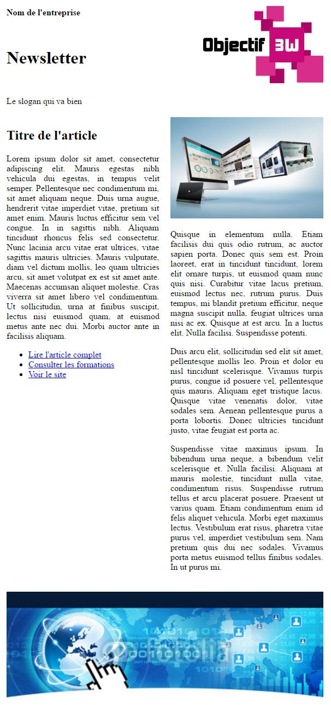

Afin de mettre un peu en pratique les différentes balises HTML et instructions CSS vu jusqu'ici : nous allons pouvoir faire notre première intégration par la biais d'une newsletter.
La première chose à retenir sur ces dernières (bien que ce soit de moins en moins vrai), c'est qu'il existe une grande diversité de logiciels interprétant ce format d'envoi. De plus, nous avons vu se démocratiser ces dernières années l'utilisation des webmails.
Afin de rester compatible au maximum, nous allons donc devoir rester un peu "archaïque" sur les méthodes d'intégration de newsletter et n'utiliser que des tableaux avec du style en-ligne sur chaque balise HTML. Ceci est dû au fait que de nombreux logiciels ne tiennent pas compte, voir même supprime les en-têtes de document HTML.
Maintenant, essayons de reproduire l'image suivante à taille réelle. Vous aurez besoin des images présentes dans le dossier assets\images\X1.01_-_Integration_de_newsletter
Pour cette exercice, nous allons ajouter une difficulté supplémentaire : retrouver les éléments graphiques depuis une maquette faite avec le logiciel Photoshop.
Vous trouverez donc dans le dossier assets\sources\X1.02_-_Integration_de_newsletter les sources graphiques.